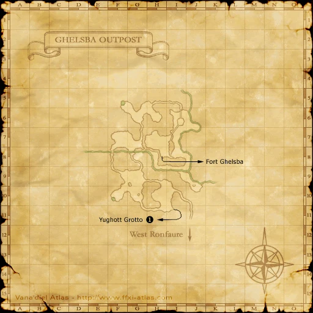
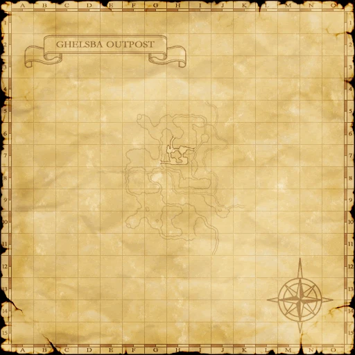

Before you begin
Be allied with San d'Oria, have Rank 1, and finish the preceding required story steps. Raise Rank Points if the mission is not offered.
Accept the mission before following its route. If the guard does not offer it, finish your current mission and any closing scenes, then raise Rank Points with crystals at a Conquest guard if required.
Items and key items
| Item — open for its source | Type | Where it comes from |
|---|---|---|
| Orcish Hut Key | Key item | Win Save the Children at the Hut Door, Ghelsba Outpost (F-10). |
Walkthrough
Get the briefing
- Accept Save the Children. Speak to Arnau at the cathedral altar in Northern San d’Oria (M-6).
Enter the rescue battle
- Enter Ghelsba Outpost from West Ronfaure (E-4), then find the Hut Door at Ghelsba Outpost (F-10).
- Examine the Hut Door and choose Save the Children. Defeat the three Orc enemies and finish the victory scene. You receive the Orcish Hut Key.
Rescue and report
- Examine the Hut Door again after leaving the battlefield. This uses the key and plays the rescue scene; simply winning is not enough.
- Return to a San d’Oria mission guard for Rank 2 and 1,000 gil. You can revisit Arnau for the follow-up dialogue.
Route maps




Completion and reward
Rank 2; 1,000 gil
Area maps
Open a zone below, then select a map to enlarge it. Match the named floors and grid coordinates in the steps; these are reference area maps, not a live position tracker.
Northern San d'Oria

Ghelsba Outpost




West Ronfaure

References
Native mission script used by the Zenith baseline · HorizonXI route and map reference
Written for Zenith from the reviewed mission steps. Battlefield conditions follow the server’s entry message; Horizon-exclusive wardrobe rewards are not part of these rewards.
Additional level-75 reference
|
Walkthrough
- Speak to a Mission NPC; you are told to see a priest at the Cathedral in Northern San d'Oria.
- The priest is Arnau and is standing at the altar. You are told in a cutscene that orcs have captured some children and are holding them in Ghelsba Outpost.
- Go to Ghelsba Outpost(G-9) (the large hut). Check the hut door and select "Save the Children".
- Fodderchief Vokdek (Warrior)
- Strongarm Zodvad (Ranger)
- Sureshot Snatgat (Ranger)
- Defeat the orcs and you will get a key which you can use to open the door and release the children.
- NOTE: Only San d'Orians (current or former alliegiance) may enter this BCNM
- Once you have the key you must click on the hut door again to activate a cutscene.
(DO NOT LEAVE Ghelsba Outpost without checking the hut door. If you forget, you will have to make your way back to do so.)
- Return to a Mission NPC for a cutscene. You will get your Rank 2 here.
- Go to the Cathedral for another cutscene with Arnau. (This is optional)
Game Description
- Mission Orders
- Rescue the children held captive in the Orcish camp in Ghelsba Outpost.
Adapted from Eden Wiki: Save the Children · Contributors and history · CC BY-SA 4.0. Revision 2228. Layout, links and optional background text adapted for Zenith.